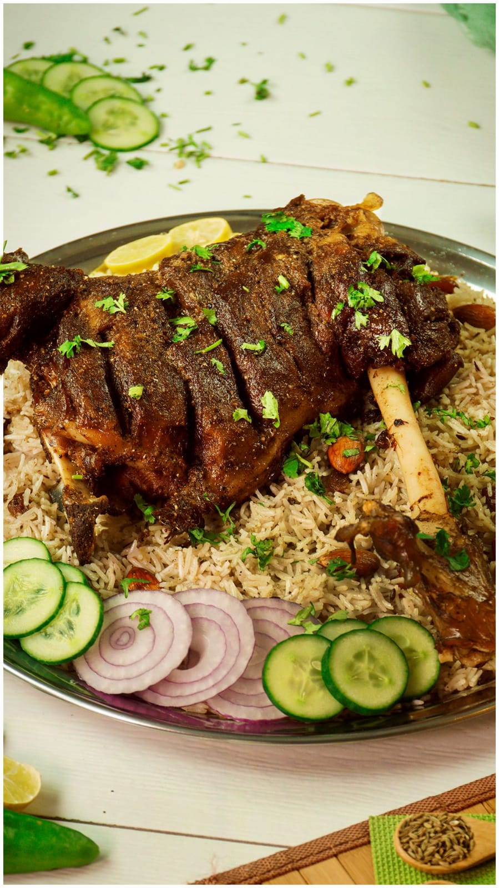

1. NASI KEBULI

Bahan:
- 4 sdm margarin
- 150 gram bawang bombay
- 5 butir cengkeh
- 50 ml air
- 750 ml susu cair atau santan
- 1 kg beras pulen
- 8 butir kapulaga
- 1,2 butir biji pala dan memarkan
- 10cm kayu manis
- 300 garm daging kambing
Bumbu Halus:
- 10 butir bawang merah
- 5 siung bawang putih
- 4cm jahe
- 1.5 sdm ketumbar
- 1,2 sdt meric butir
- 2 sdt gram
Cara membuat:
- Panaskan mentega hingga meleleh, lalu masukkan bumbu aduk hingga harum dan matang.
- Masukkan kayu manis, cengkeh, kapulaga, aduk hingga tercium aroma wangi.
- Tambahkan daging kambing, aduk sampai kaku.
- Tuangkan air, masak hingga daging kambing menjadi lunak.
- Beras di kukus hingga +- 30 menit sampai setengah matang lalu angkat.
- Taruh beras dalam panci, tambahkan susu atau santan, jerangkan di atas api aduk rata.
- Tambahkan daging kambing tumis, aduk hingga susu/ santannya habis lalu diangkat.
- Kukus kembali selama 30 menit sampai matang dan angkat.
- Sajikan nasi kebuli kambing khas arab selagi masih panas dengan bahan pelengkapnya agar aroma masih terasa mantap.